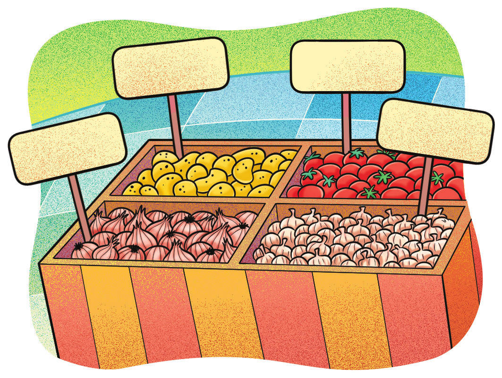

233
UNIDADE 7 - CAPÍTULO 2
CAPÍTULO 2 - Grandezas proporcionais
Grandezas diretamente proporcionais
Márcia quer preparar um bolo de chocolate, mas não sabe como fazer. Perguntou à sua vizinha que ditou a seguinte receita:
Ingredientes:
► 4 ovos (separe as claras das gemas)
► 4 colheres de sopa de chocolate em pó
► 2 colheres de sopa de manteiga
► 3 xícaras de farinha de trigo
► 2 xícaras de açúcar
► 2 colheres de chá de fermento
► 1 xícara de leite
Modo de preparo:
► Bata as claras em neve e reserve.
► Em outra vasilha bata o restante dos ingredientes, menos o fermento.
► Após obter uma massa homogênea, misture o fermento e a clara em neve fazendo movimentos circulares com uma espátula.
► Coloque em uma forma untada e asse por 40 minutos.

1. Troque ideias com um colega e escrevam, no caderno, a quantidade de ingredientes necessários para Márcia fazer uma receita e meia.

► Qual a razão entre a quantidade de ingredientes iniciais e a quantidade necessária para fazer uma receita e meia?
Note que ao aumentarmos ou diminuirmos os ingredientes de uma receita, para que o bolo fique bom, todos eles devem aumentar ou diminuir de modo proporcional.
234
UNIDADE 7 - CAPÍTULO 2
Agora, vejamos outra situação:
Uma equipe de operários está construindo uma casa de 150 m² que deverá levar, aproximadamente, 6 meses para ficar pronta. Outra equipe com a mesma quantidade de operários está construindo uma casa de 180 m². Sabendo que a carga horária de todos é a mesma, como podemos calcular o tempo preciso para construir a casa de 180 m²?
Note que, o tempo necessário para construir a casa e a sua área pode ser medido ou contado. Neste caso, temos duas grandezas envolvidas na situação, área e tempo. Essas grandezas são diretamente proporcionais, quando uma aumenta, a outra aumenta também na mesma proporção.
Para calcular o tempo que os operários levarão para construir a casa de 180 m², vamos utilizar a propriedade fundamental da proporção. Há uma proporcionalidade direta entre a área da casa e o tempo para construí-la.
A área de uma casa é 150 m² e a da outra 180 m². Vamos determinar a razão entre as suas áreas:
\(\dfrac{150}{180} = \dfrac{5}{6}\)
Como a proporcionalidade é direta temos que o tempo aumenta na mes- ma razão, logo:
\(\dfrac{5}{6} = \dfrac{6}{x}\), em que x representa o tempo, em meses, para construir a casa de 180 m².
Calculando o valor de x, temos:
5·x=6·6
5x = 36
x = 7,2
Logo, para construir uma casa de 180 m² são necessários, aproximadamente, 7 meses e \(\dfrac{2}{10} = \dfrac{1}{5}\) de um mês que corresponde a 7 meses e 6 dias.
235
UNIDADE 7 - CAPÍTULO 2
Regra de três
Marcelo comprou um carro novo que percorre 12 km com 1 litro de gasolina. Ele irá fazer uma viagem de 864 km e precisa saber quantos reais gastará com combustível. Para isso, ele precisa calcular quantos litros de gasolina serão necessários para essa viagem. Veja como ele calculou:

Por meio da propriedade fundamental da proporção, temos:
\(\dfrac{12}{824} = \dfrac{1}{x}\)
12x = 864
x = 72
Isso significa que serão necessários 72 litros de gasolina para Marcelo percorrer essa distância.
Para calcular a quantidade de litros de gasolina necessários foi usado um procedimento denominado regra de três.
ENCONTRE SOLUÇÕES
1. Observe o preço do quilograma da batata em um determinado supermercado:
Em seu caderno, complete o quadro a seguir com o valor a ser pago para a compra da quantidade citada em cada caso.
236
UNIDADE 7 - CAPÍTULO 2
2. O carro de Lúcio percorre 8 km com 1 litro de combustível. Preencha o quadro a seguir, em seu caderno, com a quantidade de litros que ele irá gastar para percorrer as distâncias dadas.
3. Mônica obteve 5,6 de nota em uma avaliação que valia 7. Se essa avaliação valesse 10, qual seria a nota de Mônica?
4. Uma fábrica de chocolate está distribuindo prêmios em suas barras de chocolate branco. Para cada 500 barras produzidas, 6 são premiadas. Em uma produção de 4 500 barras, quantas estarão premiadas?
5. Para pintar uma parede de 55 m² foram utilizados 6 litros de tinta. Quantos litros de tinta serão necessários para pintar 234 m²?
6. Durante um banho de 10 minutos são gastos 80 litros de água. Sandra, que antes levava 10 minutos no banho, resolveu diminuir seu tempo para 7 minutos para economizar água. Quantos litros de água ela está economizando em cada banho?
7. Em um concurso público, de cada 12 aprovados, 8 são mulheres. Sabendo que foram aprovadas 72 pessoas, quantos homens foram aprovados nesse concurso?
8. Um carro consome 25 litros de álcool para percorrer 300 km. Supondo condições equivalentes, determine quanto consumirá esse mesmo carro, para percorrer 540 km.
9. Uma máquina trabalhando durante 30 minutos, produz 90 peças iguais. Quantas peças serão produzidas, iguais as demais, pela mesma máquina se esta trabalhar durante 2 h e 40 min?
10. (CMPA) Uma máquina varredeira limpa uma área de 5 100 m² em 3 horas de trabalho. Nas mesmas condições, o tempo em horas que essa máquina levará para limpar uma área de 11 900 m² é igual a:
a) 3
b) 5
c) 7
d) 9
e) 11
237
UNIDADE 7 - CAPÍTULO 2
Grandezas inversamente proporcionais
Uma empresa de engenharia está construindo um conjunto de casas habitacionais de 50 m² cada uma. Cada casa leva 4 meses para ficar pronta com 5 operários trabalhando. Caso a empresa queira diminuir o tempo de construção das casas para 2 meses, serão necessários 10 operários trabalhando na construção de cada casa.
Observe:
Neste caso, as razões não são iguais, uma é o inverso da outra. As grandezas envolvidas nessa situação são inversamente proporcionais: se uma dobra, a outra reduz pela metade; se uma triplica, a outra se reduz a terça parte, e assim sucessivamente.
Agora vejamos outra situação:
Um grupo de amigos irá fazer uma excursão e alugou uma van com 14 lugares. O valor que eles irão pagar por dia de aluguel é de R$ 224,00. Caso eles consigam lotar a van, cada passageiro pagará R$ 16,00 por dia de locação. Até o momento, somente 10 amigos confirmaram que irão na excursão. Quanto cada um pagará por dia da locação?
Nesse caso, quando se diminui a quantidade de pessoas, aumenta-se o valor a ser pago por cada um, por exemplo, se a quantidade de pessoas cair pela metade o valor a ser pago por cada um será o dobro. Essas grandezas são inversamente proporcionais.
238
UNIDADE 7 - CAPÍTULO 2
Como as razões são inversas, para representarmos a proporção e usarmos a regra de três, precisamos inverter uma das razões. Observe:
\(\dfrac{14}{10} = \dfrac{x}{16}\)
10x = 14 ∙ 16
10x = 224
x = 22,4
Caso somente 10 amigos resolvam viajar, então cada um pagará R$ 22,40 por dia de locação da van.
ENCONTRE SOLUÇÕES
1. Identifique nas situações a seguir se as grandezas são diretamente ou inversamente proporcionais.
a) A medida do lado de um triângulo equilátero e o seu perímetro.
b) O número de ganhadores de um prêmio da loteria e o valor que cada um receberá.
c) A velocidade média de um automóvel e o tempo para percorrer um determinado percurso.
d) A quantidade de dúzias de ovos a serem comprados e o preço total a ser pago.
2. Nove pessoas produzem uma determinada quantidade de produtos em 12 dias de serviço. Quantas pessoas, com a mesma capacidade das primeiras, seriam necessárias para produzir a mesma quantidade de produtos em 9 dias?
3. Um carro faz uma viagem em 50 minutos com uma velocidade média de 80 km/h. Quanto tempo ele levará para fazer a mesma viagem se sua velocidade média for igual a 100 km/h?
4. Luciana encomendou os armários do seu quarto em uma empresa especializada em móveis e solicitou que eles fossem entregues em 20 dias. Quatro marceneiros fazem esses armários em 25 dias. Aumentando o número de marceneiros é possível entregá-los antes. Quantos marceneiros serão necessários para que os armários sejam entregues no prazo de 20 dias?
5. (UFSM-RS) Uma ponte é feita em 120 dias por 16 trabalhadores. Se o número de trabalhadores for elevado para 24, o número de dias necessários para a construção da mesma ponte será
a) 180
b) 128
c) 100
d) 80
e) 60